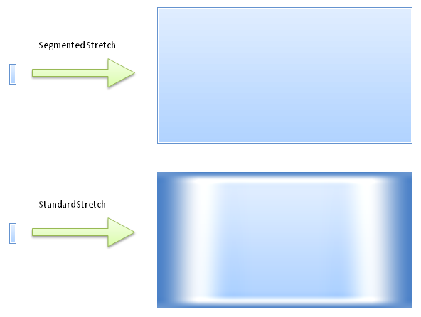
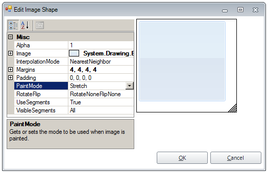

ImageShape
RadImageShape implements the so called “Segmented Image” semantic, which in general allows a
small image (pattern) to be stretched to larger bounds without quality loss. This effect is achieved by dividing the image into 9 logical parts
(segments) and providing advanced paint logic for each part.

RadImageShape.Margins
RadImageShape

Using the Margins property, an image is divided into 9 segments. Following is a brief overview of each segment and how it is stretched:
TopLeft – not stretched
Top – stretched horizontally
TopRight – not stretched
Right – stretched vertically
BottomRight – not stretched
Bottom – stretched horizontally
BottomLeft – not stretched
Left – stretched vertically
Inner – stretched horizontally and vertically
Advanced Settings
RadImageShape exposes some advanced settings that allow any complex rendering logic to be easily described. Such settings are:
- PaintMode – available are 14 different modes, where each one defines custom paint logic of the 9 segments.

PaintMode.StretchYTileX
*InterpolationMode – *defines the interpolation passed to the underlying GDI+ Graphics used to paint the each image part.
*RotateFlip – *additional option, which allows the source image to be rotated/flipped before segmentation.
Editing RadImageShape in Visual Style Builder
Each RadElement exposes a property named BackgroundShape which is of type RadImageShape. Complete Visual Style Builder support is provided and you can either create a RadImageShape repository item or edit the BackgroundShape property directly in the advanced view of each element.
